Tweet
Tweet
So much for binarization. We now have a black-and-white image where the text becomes readable because the color background (if any) was removed.
But that doesn’t mean that the entire image has to be submitted to the OCR process. A scan may contain, say, a big title, several text columns, photos, a table and a footer. In any case, indicating several text windows is mandatory whenever a text is arranged in columns.
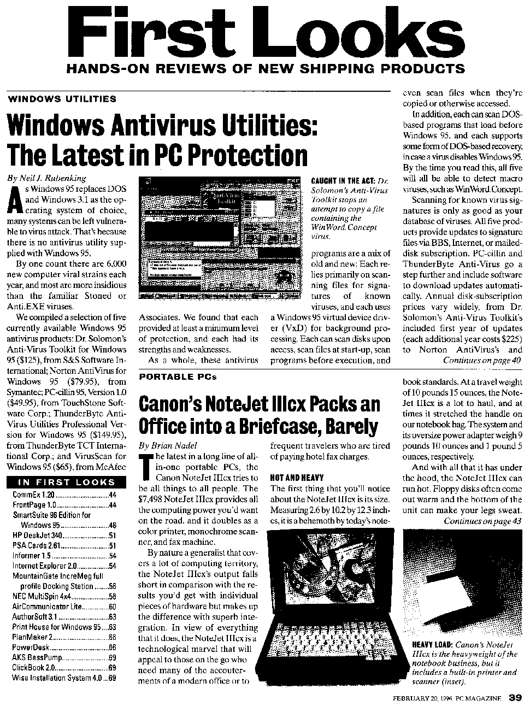
How do you indicate the zones of interest to be recognized on the scanned page? There are varying methods of zoning images: automatic page analysis, manual windowing and the use of fixed layouts.
Page analysis does the job for you: the text windows, the graphics (photos, logos, artwork etc.) and tables are detected and sorted automatically.
With manual windowing, the user indicates which zones he wants to capture. You can draw rectangular and polygonal windows on a displayed image to indicate which text and table zones you want to recognize and which graphics you want to save.
You can also take the middle road: have the system detect the various blocks, then intervene to edit the zoning results by excluding certain blocks or columns from recognition, changing the sort order etc.
Finally, OCR software allows you to store specific zoning templates for future use. Such predefined window structures are particularly useful when documents with a similar page layout are recognized. When you scan the pages of a book, a zoning template comes in handy: you frame the actual text, excluding the headers and footers that indicate the chapter, page number, publication, possibly even the black borders generated by your scanner etc.
Page decomposition is the process whereby advanced OCR software breaks a page up in text blocks, graphics and tables — the zone types may vary per OCR package. That can be done manually and automatically.
In the latter case, we speak of “page analysis”. Page analysis implies that the various blocks as occur on a scanned page are detected and sorted by the software, not by the user. Ideally speaking, intelligent routines detect which zones contain text, which zones contain graphics and which contain tables.
Page analysis is particularly useful when columnized texts and documents with a complex page layout are recognized, because the user avoids all the more work when it comes to indicating the zones of interest.
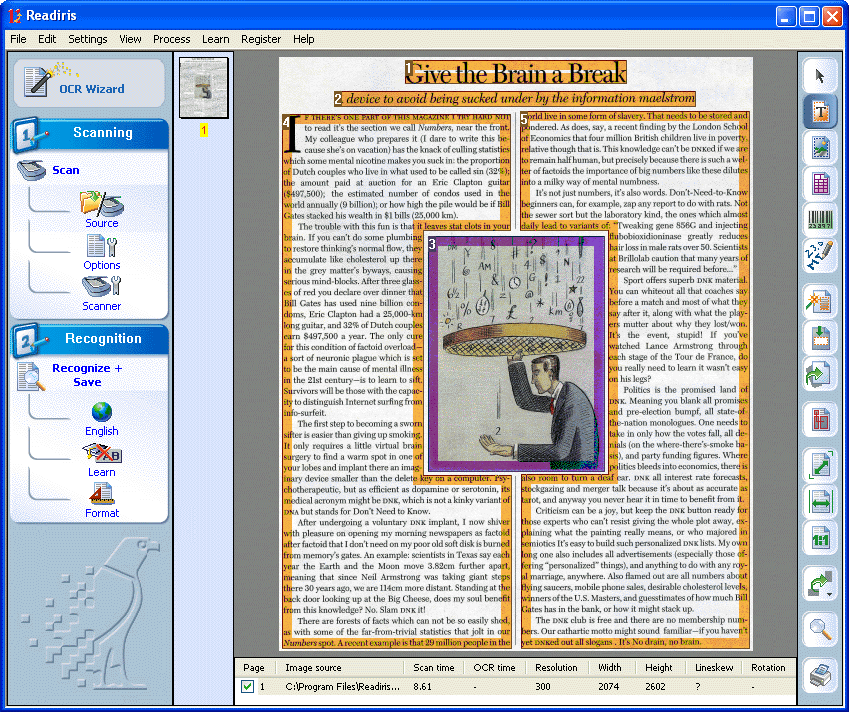
(Or combine the best of two world: have the system detect the text blocks, then intervene to exclude certain blocks or columns from recognition, change the sort order, create new zones where the automatic page analysis did not yield optimal results etc.)
Page analysis is sophisticated to the point of detecting irregular shapes: it will for instance adequately frame a graphic embedded in text columns.
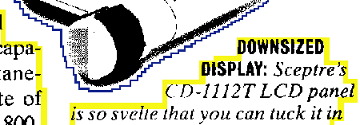
Seems far fetched? Not really. Have a look at this image for instance: the OCR can only be successful when it can “work around” the frivolous graphic with the umbrella man in the middle.
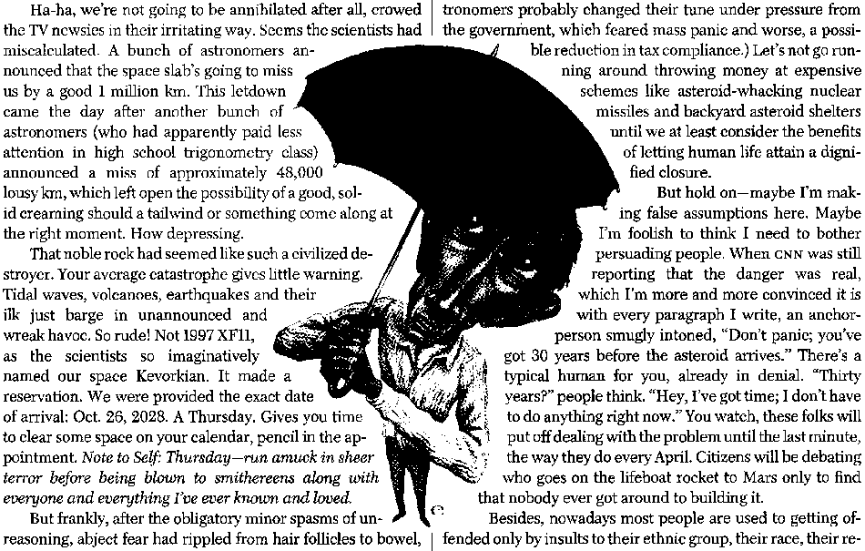
The supported zone types can vary according to the OCR software you’re using. But decent OCR software should at least support three zone types: text zones, graphic zones and table zones.
Graphic zones aren’t recognized but can be included in the recognized documents — just as you have illustrations in the source documents. Tables are recognized — but they get processed differently than text zones. Here too, the objective is to recreate the source document, which implies including the tables.
Advanced OCR software detects both “gridded” and “ungridded” tables. “Gridded” or “framed” tables have borders around the cells, “ungridded” tables don’t have any borders around the cells — they’re simply composed of text organized in columns.
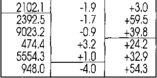 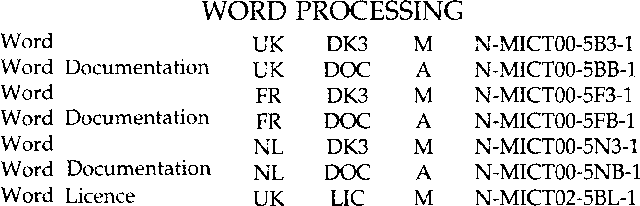
Most OCR software can limit recognition to a numeric mode. Thus, you exclude possible confusion between “O” and ‘0’, between “B” and ‘8’ etc. The numeric mode does include currency symbols such as, say, the dollar ($), pound (£), yen (¥) and the Euro (€) symbol. Things may vary somewhat per OCR package.
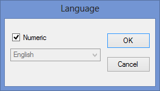
State-of-the-art OCR software will even detect zones in “inverted” frames. Let’s say that half of the scanned page is a black or dark frame which contains a few text blocks (and possibly a table). Not to worry: the OCR software will look for the text (and table) zones inside the inverted frame!
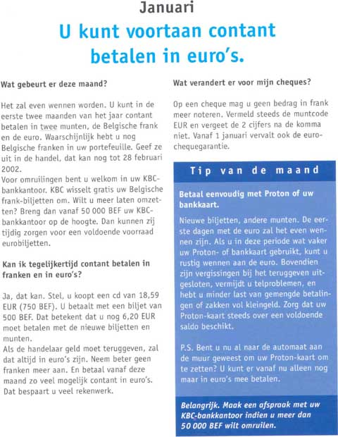 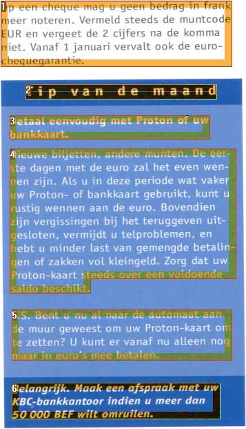
Actually, the user doesn ’t have to do anything: the OCR software automatically inverts these zones when they have to be recognized.
There may even be a special page decomposition algorithm for Asian documents: the interline spacing of Asian documents is in most cases bigger than in Western documents and the text is less “dense”. The words are made up of small icons, so-called “ideograms”, that could easily be seen as graphic zones in Western documents. Also, the text may run from top to bottom and from right to left, and the OCR software has to sort the text blocks accordingly.
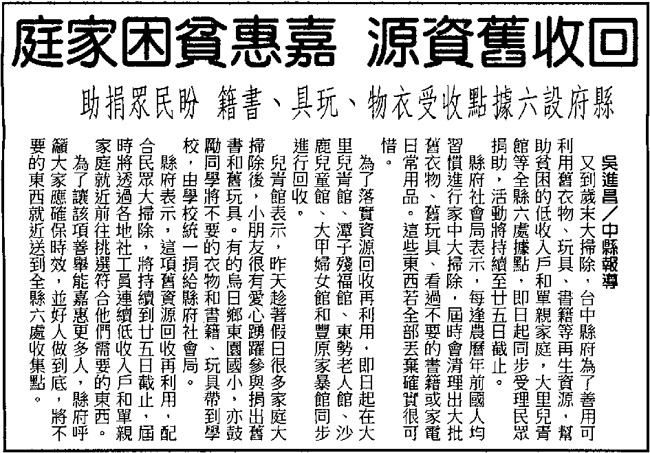
Hebrew and Arabic documents equally require special page analysis routines: these languages are written from right to left!
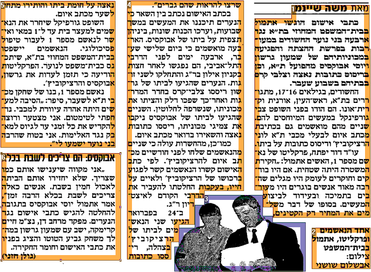
However, numbers are written from left to right, and so are embedded phrases in Latin script. In other words: when numbers and Latin words are inserted in Hebrew and Arabic texts, both the reading direction and the alphabet change in mid course!
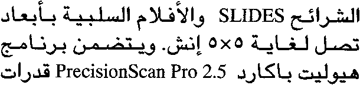
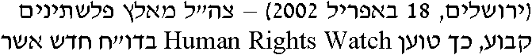
Let’s take things step by step, shall we? — Take us where the rainbow ends! — B is for binarize — What gets read and what doesn’t — Lines, lineskew and drop letters — Segmenting words and characters — Stylized fonts — Why is OCR software called omnifont? — What’s the role of linguistics in the OCR process?
Home page — Intro — Scanners — Images — History — OCR — Languages — Accuracy — Output — BCR — Pen scanners — Sitemap — Search — Feedback – Contact